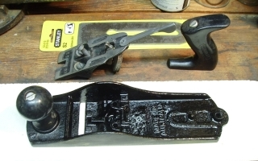
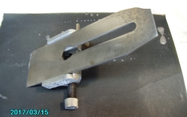
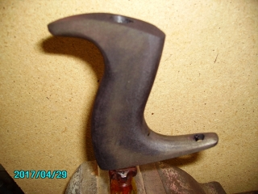
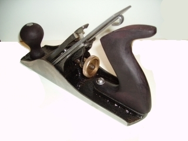
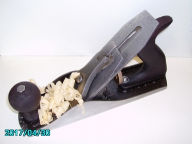
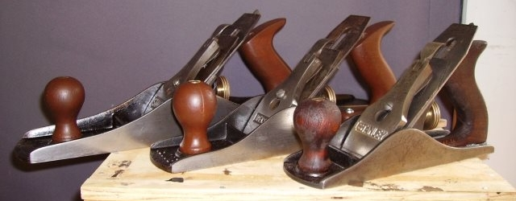

WORTHINGTON'S WORKSHOP
Project - Restore an Old, Rusty Hand Plane
|
|
This operation came about after a desire to obtain a Hand Plane cheaply on eBay. I have since learnt there is no such thing to be had. Either the Planes are rusty in a decrepit state for around the $20 mark, rusty and sold for 'man caves' for around the $60 mark or fully restored for above $120. The restored Planes had me intrigued and I came across a pair of decrepit Planes on auction for a very low starting price. I couldn't pass this up, so a bid was made with eventual purchase of the two for $2.55 plus $12.90 post from Newcastle. These were to be the practice subjects for my restoration processes. So far I have refurbished a total of four Planes, with one of the first two already sold on eBay for $25.00. Each Plane will take a day for the electrolytic bath to convert the rust back to steel and then another day of grinding, sanding and sharpening. The results are outstanding and well worth doing for the pleasure of having decent hand tools. The same process can also be applied to chisels which can be bought extremely cheaply. There are several processes involved: (1) Disassembling the Plane into its component parts (2) Separating the metallic parts (3) Soda Bath for rust removal from the metallic parts (4) Cleaning the parts after the Soda Bath (5) Sanding and polishing the Blade parts (6) Sanding and Polishing the Plane body (7) Cleaning the top of the Plane base and the frog (8) Japanning the top of the Plane base and the frog (9) Sharpening the blade and backing plate (10) Finishing the Tote and Knob (11) Reassembling the Plane (12) Aligning and Testing the finished Plane (1) A cheaply bought Stanley, Carter or equiv Hand Plane. Pay no more than $20.00 on eBay. (2) Washing Soda, sold by Woolworths as Lectric brand at $3.99 for 1kg. (3) A plastic bucket capable of taking the submerged Plane base. Available hardware store. (4) Water to fill plastic tray. Tap water is quite OK. (5) Power Supply 6V capable of 4 amps. A computer 5V supply would also work. (6) Oil Stone with rough grit, perhaps #50 and #80 grade or similar. Available Bunnings. (7) Wet and Dry Sanding Papers of #240 and #600 grit. Available Bunnings. (8) Honing guide to mount the Blade for sharpening. Available from Bunnings Trojan brand. (9) Lubricating oil for sharpening the blade on the Oil Stone. Available Bunnings. (10) Stain for the Knob/Tote. Bunnings Feast Watson Mahogany stain 250ml for $22.50. (11) Asphaltum for the Japanning. Available from The Gold Leaf Factory 250mL for $13.20. (12) Lacquer for Japanning. I used a 250mL tin of Wattyl Estapol Clear Gloss. Bunnings. (13) Clear Varnish. Spray cans available Bunnings. (14) Grinding Paste stick. Available Bunnings, usually as part of a Buffing Wheel kit. (15) An strip of Denim from a discarded pair of jeans to strop the sharpened Blade. (16) Cleaning rags for the Plane grinding surfaces and hands. Available from Bunnings. (1) Disassembling the Plane: (a) Unclip the Cam Lever on the Lever Cap. (b) Unscrew the Lever Cap Screw. (c) Remove the Lever Cap and the Blade with the attached Backing Plate. (d) Undo the screw holding the Blade to the Backing Plate. (e) Undo the two Frog Mounting Screws and Washers. (f) Undo the Frog Adjustment Bar and Screw just below the Blade Adjusting Nut, if included. (g) Undo the Frog Adjustment Screw from the base of the Plane. (h) Unscrew the one or two Screws holding the Tote (rear handle) and remove the Tote. (i) Unscrew the Screw holding the front Knob and remove the Knob. Screws may be either a circular nut plus a threaded shaft or a singular long screw.  Plane Parts Disassembled (2) Separating the metallic parts The electrolytic rust removal process only works on ferric metals. Non ferric metals will produce toxic fumes, so do not attempt to clean them in the Soda Bath. The Plated Lever Caps and the Brass Adjusting Nut will be need to be processed separately, as will any wooden, plastic or aluminium handles. In this case I found the Lever Cap to be unplated. The Adjusting Nut and it's attendant Screw are turned in a clockwise direction to unscrew.  Plane Metallic Parts Separated (3) Soda Bath to remove rust and gunk The Soda Bath has a sacrificial Anode connected to the positive polarity of the battery charger. I use an old piece of angle iron, which attracts the rust particles and ends up a dirty grungy black colour. The negative polarity of the battery charger connects to the Work Piece which acts as a Cathode. Two or more pieces can be connected via clip leads, but be sure none touch the Anode. Fill the container with a couple of litres of clean water and add five heaped tablespoons of Washing Soda. The Washing Soda solution acts as the electrolyte to enable charge transfer between the electrodes and the rust removal. Set the Battery Charger to 6 Volts and 5 Amps current capability. Clip the Positive (+ve red) lead to the Anode and the Negative (-ve black) lead to the Work Piece and turn on the power.  Plane Metallic Parts In The Soda Bath (4) Cleaning the parts after the Soda Bath Stop the process when the Work Piece shows a fresh patina when cleaned. You will also need to rotate each work-piece to ensure the whole surface is cleaned by the bath. Overdoing the bath will induce pitting. (a) Brew for up to 24 hours, inspecting the Work Piece and Anode regularly. (b) Every two hours clean the Work Piece and inspect for rust removal and pitting. (c) The Anode needs cleaning back to bare metal with a wire brush when the bubbling stops. (d) When the bath is finished, wash all components in clean water and dry with a soft cloth.  Plane Parts After The Soda Bath (5) Sanding and polishing the Blade parts Sanding using the Wet & Dry paper is improved if the paper is squirted with Ajax 'Spray and Wipe'. Place the Wet & Dry on a perfectly flat surface such as a clean piece of melamine coated fibre board. Grind the edge area of the bottom of the blade to be perfectly smooth, as this determines the eventual cutting edge angles. (a) Remove rust from the Blade, Backing Plate, screws and nuts using a rotating wire brush. (b) Grind both sides of the Blade and Backing Plate with an Oil Stone to flatten. (d) Sand both sides of the Blade and Backing Plate with #600 grit paper until they reflect. (c) Sand the Lever Cap with #160 then #600 grit paper. (d) Polish the bottom and sides of the Plane Body with a buffing wheel using polishing paste. (e) Wash all components in clean water and dry with a soft clean cloth.  Plane Blades After Polishing (6) Sanding and Polishing the Plane body: Sanding using the Wet & Dry paper is improved if the paper is squirted with Ajax 'Spray and Wipe'. Place the Wet & Dry on a perfectly flat surface such as a clean piece of melamine coated fibre board. Grind the mouth area of the bottom of the Plane to be perfectly smooth, as this establishes the feed into the blade. (a) Remove rust from all the Plane Body bottom and sides using a rotating wire brush. (b) Grind the bottom and both sides of the Plane Body with an Oil Stone to flatten. (c) Sand the bottom and sides of the Plane Body with #160 then #600 grit paper. (d) Polish the bottom and sides of the Plane Body with a buffing wheel using polishing paste. (e) Wash all components in clean water and dry with a soft clean cloth.  Plane Bottom After Sanding And Polishing (7) Cleaning the top of the Plane base and the frog: Be sure to grind the edge area of the bottom of the blade to be perfectly smooth, as this determines the eventual cutting edge angles and the ability of the Plane to do fine shaving. (a) Remove rust from all the Plane Body and Frog using a rotating wire brush. (b) Use a small wooden bodied wire brush to finish the cleaning process. (c) Clean the bottom and both side of the Plane Body with #160 then #600 grit paper. (d) Grind the bottom and both side of the Plane Body flat with an Oil Stone. (e) Clean the Frog blade mating surfaces with #160 then #600 grit paper. (f) Wash all components in clean water and dry with a soft clean cloth.  Plane Body After Sanding And Polishing (8) Japanning the top of the Plane base and the frog: Japanning is a protective coating that prevents rust and dirt access to the body of the plane. It is a mixture of equal parts Asphaltum and Lacquer. To do a complete plane only requires a cm depth in the bottom of a spare glass jar. With the lid applied, the small mixture will not set and will last until the next few jobs. The 250mL container should thus last a lifetime. Apply the Japanning using a fine soft brush to the interior of the Plane Body and the already blackened surfaces of the Frog. Overspills can either be wiped away or dissolved in Mineral Turpentine. Do a single application and allow it to harden overnight. Any discrepancy in thicknesses will be overcome by the ability of the Japanning to flow. It is surprising how a seemingly rough job will even out.  Japanning The Plane Body (9) Sharpening the blade and backing plate: Mount the Blade upside down in the Honing Guide, set to 25 degrees for the initial grind. Ensure the Blade is perfectly horizontal by carefully adjusting the mount and screw tightness. Use a full sheet of #600 grit Wet & Dry paper on a flat sheet of Melamine coated board. Lubricate the surface with occasional squirts of Ajax 'Spray and Wipe'. (a) Adjust the Guide for a 25 degree grind and rub the Blade back and forth until a flat shining edge sits perpendicular to the side of the Blade. If not the Blade needs to be reground. (b) Adjust the Guide for a 30 degree grind and rub the Blade back and forth until approx 20% of the cutting surface has been ground. (c) Strop the Blade on a piece of Denim cloth using the grinding paste for the final polish. A properly sharpened blade will shave arm hairs. (d) File the leading edge of the Backing Plate to sit flatly against the Blade.  Sharpening The Blade (10) Finishing the Tote and Knob: (a) Clean the Knob and the Tote using #600 grit Wet & Dry. (b) If there are substantial notches in a wooden Tote, infill with a section of pine and sand. (c) File and sand the Tote base perfectly flat. The mounting screw may need to be ground. (d) Wooden Knobs may have an angled bottom. Infill with a wedge of pine and file to fit. (e) Finish with Estapol for Stanley, Mahogany stain for Carter Planes and dry overnight. (f) Coat with a clear varnish to prevent stained hands and wait two hours to dry.  Restoring The Tote (11) Reassembling the Plane: Reassembly is virtually the reverse of the disassembly process. (a) Mount the Knob and Tote plus the Frog Adjustment Bar and its Screw. (b) Set the Frog as far back as possible by applying and loosely fixing the two front screws. (c) Install the Frog Adjustment Screw in the Frog, fitting it into the slot on the bar. (d) Mount the Backing Plate with a set back of 3mm from the cutting edge of the Blade. The Blade appears to be upside down as the ground cutting surface is parallel to the bottom of the plane. The Backing Plate sits on top of the Blade. (e) On the Frog install the Blade & Backing Plate then loosely mount the Lever Cap Screw. (f) Mount the Lever Cap and set the lock down. (g) Tighten the Lever Cap Screw until it is a firm hold.  The Reassembled Plane (12) Tuning and Testing the finished Plane: Tuning consists of setting the location of the Blade in relation to the Throat opening. (a) Centre the Lateral Adjuster and set the Frog back with it's Adjustment Screw. (b) Tighten the Frog mount screws so the Frog can still be moved by the Adjustment screw. (c) Adjust the Blade and Lever Cap for vertical alignment then tighten the Lever Cap screw. (d) Adjust the Blade Adjuster for depth until it protrudes just enough to be felt by thumb. (e) Test on a piece of pine and look for thin curling shavings as per the image. (f) Finer scrolling may be made by a smaller mouth opening and a decreased blade depth.  Tuning The Finished Plane When helping her shift house, I discovered three rusty hand planes in the depths of my sisters backyard sheds. They were left in an iniquitous condition. They were so badly corroded I had to apply WD-40 and oil to undo several tight and corroded screws. I had to mount a large screwdriver in the metalwork vice, engage the screw in the driver blade and rotate the whole plane against the driver. This was the only way I could disassemble them. After several days work, I managed to remove the rust using a wire wheel, clean off all the dirt and sawdust, clean all the screws and brass knobs, Japan (blacken) the surfaces of the bases and blade holders plus clean then varnish the knobs and grips. All that is required now is the sharpening of the blades and I have three beautifully restored classic hand planes. The best part is when I discovered my fathers name and car licence etched into the sides of all three planes. These planes are collectors items, being 1940-50's Stanley and Record planes, made in England. I now have a Stanley No6 (18" = 450mm long) and a Record No5, both with rich Jarrah red gum coloured woodwork. My sister wanted a keepsake, so she will get the Stanley No4 with the classic black woodwork. Being a smaller plane, it would be more suitable as an ornamental presentation and a fantastic reminder of Dad's woodworking life. All three planes are capable of doing real work and have the patina of being decently maintained through a lifetime of use.  My Fathers Planes Restored Learning how to restore a hand plane has been an interesting journey and an educational experience. I have taught myself several dark arts, such as the construction of hand planes, electrolytic rust removal, grinding using an oil stone, sharpening blades to the extent of being able to shave and the exotic Oriental art of Japanning. In all I have certainly extended my capabilities and have a newly acquired appreciation of hand planes. There are several reference books that are recommended for further information: (1) Australian Woodworking Planemakers by Trevor D. Semmens - Crow Publishing $25.00 with free postage - eBay. (2) Stanley Planes - A guide to Identification and Value by Hans Brunner - Crow Publishing $25.00 with free postage - eBay. (3) Data on Stanley Planes Free download: http://primeshop.com/access/woodwork/stanleyplane/DataMisc.htm (4) Handbook on Japanning - 2nd Edn by William Norman Brown. Free download: https://archive.org/details/in.ernet.dli.2015.32452 |